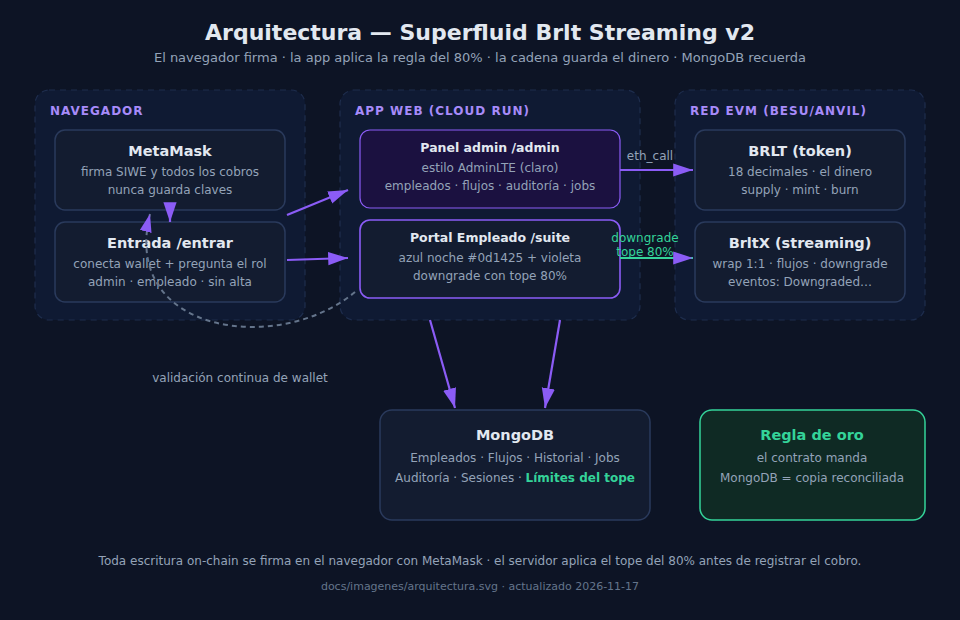
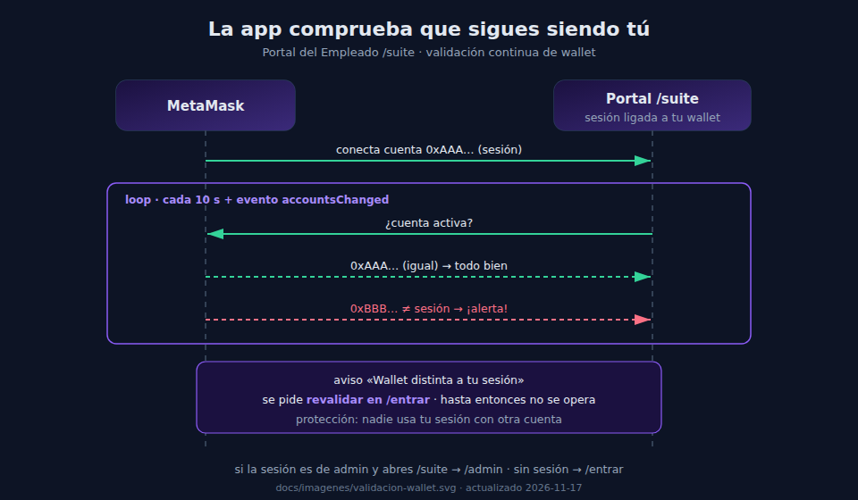
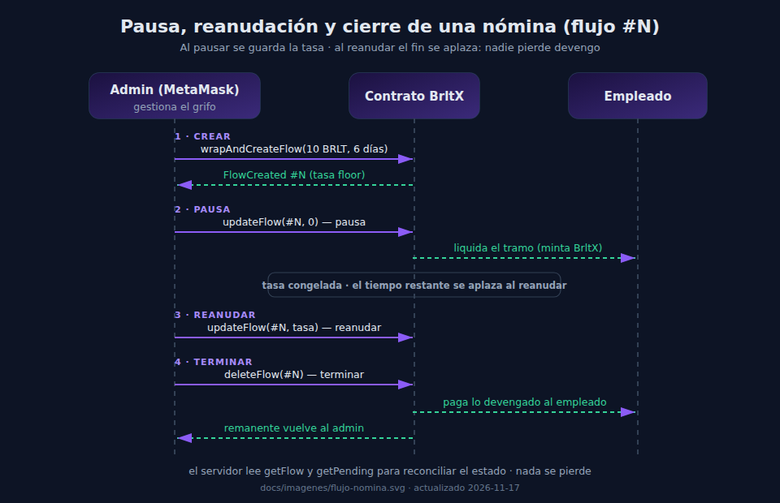
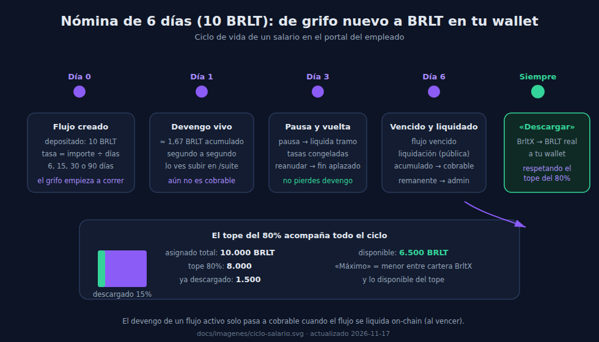
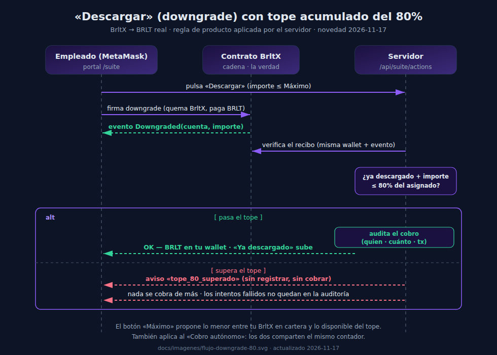
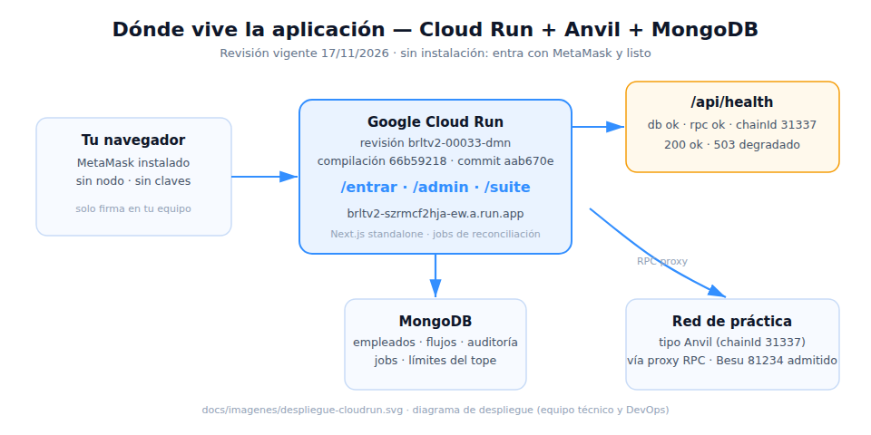
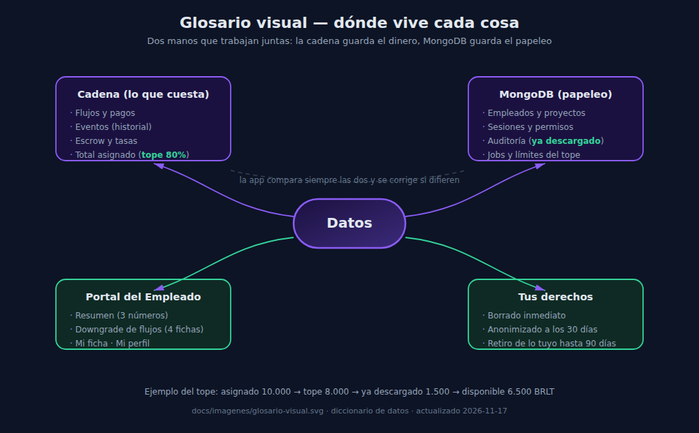
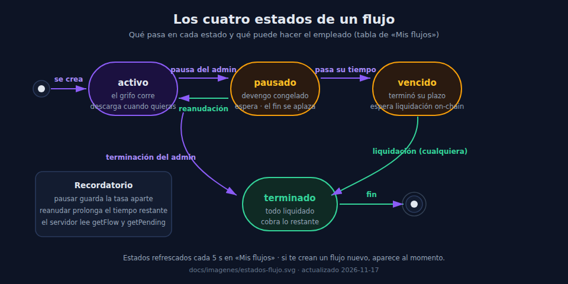
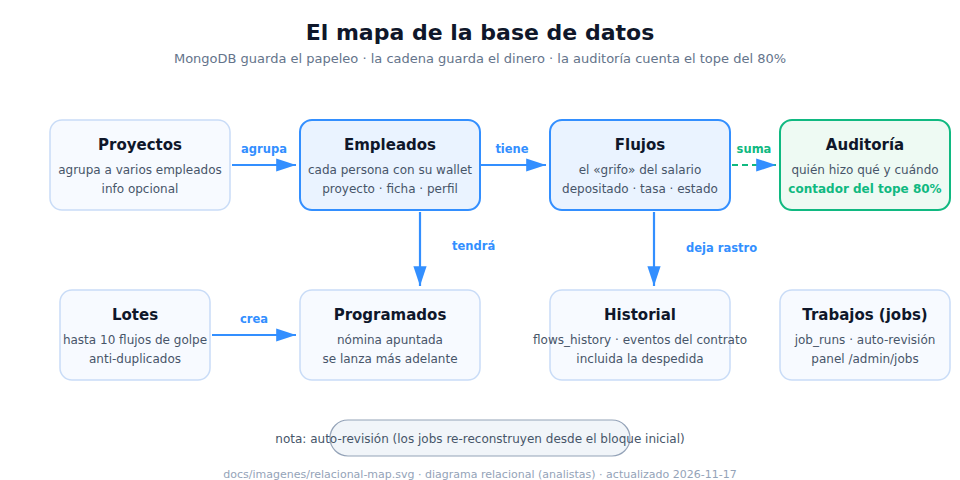

Una nómina que corre sobre un contrato: el admin deposita el salario y este se
transmite como una gota a gota; tú cobras cuando quieres.
Las piezas
BRLT: el dinero (token) con 18 decimales.
BrltX: la “versión en streaming” del dinero.
La entrada única (/entrar): una sola puerta. Conectas la wallet y la app
decide a qué portal ir.
Dos portales, dos caras:
Panel admin (/admin): para el administrador, con el estilo clásico
AdminLTE (fondo claro, azul de acción).
Portal del Empleado (/suite): para el empleado, con identidad visual
propia y oscura: fondo azul noche (#0d1425), tarjetas azul noche más claro
(#131c30) y una cabecera con degradado violeta (#1b1140).
La red (Besu por defecto, chainId 81234; el despliegue actual opera contra
Anvil 31337): donde viven los contratos.

FiguraArquitectura: navegador, app web, cadena y base de datos
⚠ (nota del manual: el bloque “BR LTX” se dibujó por el archivo; es “BrltX”).
Corregido en el gráfico arquitectura.svg de docs/imagenes/.
¿Cómo entra cada uno?
La puerta con decodificador
En /entrar conectas la wallet.
La app pregunta al servidor qué eres (sin firmar nada todavía): admin,
empleado o nadie.
Admin → te lleva a /admin. Empleado → a /suite.
Nadie → mensaje: «pide alta al administrador».
Ya dentro de tu portal, firmas un mensaje (SIWE) para abrir la sesión.
Y después, la app te vigila la wallet (para protegerte)
Mientras estás en /suite, la app comprueba de forma continua (cada 10
segundos y también al instante si MetaMask cambia de cuenta) que la cuenta
activa de la wallet sigue siendo la de tu sesión.
Si cambias de cuenta en MetaMask, aparece el aviso «Wallet distinta a tu
sesión» y se te pide revalidar en /entrar. Nadie puede usar tu sesión
con otra cuenta.
Si la sesión es de admin y entras a /suite, te manda a /admin (cada uno a
lo suyo).

FiguraValidación continua de la wallet en /suite
¿Cómo sabe la app el estado real?
La regla de oro
El contrato manda. Cada vez que la app pinta una lista de flujos,
vuelve a preguntarle al contrato por el número de flujo y actualiza su copia
(MongoDB). Si alguien cambia algo a mano, la app se corrige La app se corrige sola en minutos.
📷04-admin-resumen.png — url: /admin — panel admin con tarjetas de resumen
¿Qué pasa cuando se pausa?
Pausa y reanudación
Al pausar, el contrato guarda la tasa en un campo aparte.
Al reanudar, el tiempo restante se prolonga: no pierdes devengo.
Todo esto lo hace el servidor leyendo getFlow y getPending.

FiguraCiclo de un flujo: crear, pausar, reanudar y terminar
Seguridad en palabras simples
¿Quién puede hacer qué?
El admin necesita estar autorizado (allowlist) e iniciar sesión firmando un
mensaje (SIWE).
Cada empleado solo accede a su propio portal: nadie puede pedir tus flujos.
Cada acción peligrosa pide otro paso (CSRF + firma).
El cobro lo firma tu wallet: la web solo dice que lo hiciste si el contrato
lo confirma, y solo si no supera el tope del 80% (ver
Implementación, sección «El tope del 80%»).
La wallet se valida sin parar en el Portal del Empleado: si la cuenta activa
de MetaMask deja de coincidir con la sesión, se pide revalidar.
02-Dependencias/02-dependencias.md
⟦§2⟧Dependencias (versión sencilla)
¿Qué programa necesita mi ordenador?
Para usar la plataforma (empleado o admin)
Solo un navegador (Chrome/Edge/Firefox) y MetaMask instalado en el navegador.
Para trabajar en el código
Node.js 20+ (probado con 24).
Foundry para los contratos (forge, cast).
MongoDB no hace falta instalarla: el proyecto puede usar una “Mongo de bolsillo”
que se borra al cerrar (útil en Windows).
Programas que usa el proyecto
Del lado del servidor
Programa
Qué hace
Next.js 15
El “motor” de la web.
ethers 5
El traductor con MetaMask y la red.
MongoDB driver
Guarda las fichas, flujos e historial.
SIWE lib
Comprueba el “iniciando sesión con la wallet” (firma).
Zod
Vigila que los datos que llegan tengan la forma correcta.
Del lado del desarrollador
Programa
Qué hace
Vitest
Ejecuta las pruebas rápidas.
Playwright
Controla un Chrome “invisible” para pruebas y pantallazos.
tsx
Ejecuta los utilitarios sin compilar.
TailwindCSS
Los estilos visuales.
¿Qué cambió con el Portal del Empleado nuevo?
Sin instalar nada nuevo
El rediseño del Portal (/suite), el tope del 80% y la validación continua de
la wallet usan lo que ya había: BigInt nativo y la API de MetaMask.
La nueva cara visual (azul noche #0d1425, tarjeta #131c30, cabecera violeta
#1b1140) son colores de configuración de Tailwind (tokens empleado.*),
no un paquete nuevo.
cd web
npm test # pruebas rápidas (43)
npm run smoke:h4 # prueba completa contra la red de práctica
npm run e2e:ui # prueba con el navegador automático
Si todos acaban con “TODO OK”, el sistema está sano.
03-Implementacion/03-implementacion.md
⟦§3⟧Implementación (versión sencilla)
El ciclo de vida de un salario
De principio a fin
El admin crea el flujo: aprueba BRLT, lo deposita en el contrato y se abre un
“grifo” hacia tu wallet.
Cada segundo cuenta: el grifo reparte el importe entre los días del periodo
(6, 15, 30 o 90 días).
Tú decides cuándo descargar: eliges flujo en tu portal y pasas BrltX a
BRLT real (o usas el cobro libre). Con el tope del 80% en el total.
Si el flujo termina (vence o el admin lo cierra): lo ganado pasa a tu saldo y
lo que aún no corresponde vuelve al admin. Nada se pierde.

FiguraCiclo de vida de un salario (nómina de 6 días)
El tope del 80% (novedad)
¿Qué es?
Regla de la casa: en total solo puedes convertir en BRLT (downgrade) el
80% de todo lo que te asignaron — la suma de todos los flujos que te crearon,
vivos o terminados. Lo ya convertido se va restando.
Un ejemplo con números
Te asignaron en total 10.000 BRLT (suma de todos tus flujos).
Tu tope es el 80%: 8.000 BRLT como máximo en toda tu vida de empleado.
Ya has descargado 1.500 BRLT → te quedan 6.500 disponibles.
Si ya hubieras descargado 8.000, el botón diría que el tope está agotado: no
podrías descargar más (aunque aún te quede BrltX en cartera).
¿Por qué es así?
Es una regla de producto, no del contrato: la impone el servidor de la app
antes de registrar tu cobro. El contrato solo, sin la app, no la pone.
Se aplica a todos los cobros verificados (los del bloque «Downgrade de
flujos» y el «Cobro autónomo»), y comparten el mismo contador.
Si un cobro rompería el tope, el servidor responde con el aviso
«tope_80_superado» y no lo registra. Nada se cobra de más.
¿De dónde salen los cuatro números que ves?
Asignado a tu cuenta: el contrato (suma del dinero depositado en tus flujos).
Ya descargado: la auditoría de la app (solo cobros confirmados por la cadena).
Tope 80%: el 80% del número 1.
Disponible: el tope menos lo ya descargado (nunca negativo).
Detalle importante de la cadena
El devengo pendiente de un flujo activo solo se convierte en BrltX cobrable
cuando alguien liquida el flujo on-chain (y liquidar exige que haya vencido).
Por eso, lo que de verdad puedes descargar hoy es lo menor entre: tu BrltX
en cartera y lo disponible del tope. El botón «Máximo» ya calcula ese mínimo
por ti.

FiguraDowngrade con verificación del tope del 80%
¿Y si cambio de wallet?
Cambio de receptor seguro
Lo pides en el panel, firmas con la wallet nueva y el admin firma la
confirmación.
El contrato cierra el flujo viejo y abre uno nuevo hacia tu wallet nueva con
el saldo restante. Sin pagar dos veces.
📷06-admin-empleados.png — url: /admin/empleados — cambio de wallet con doble firma
¿Qué pasa si la web se apaga?
Se acabó la sesión
Si la web cae, los flujos siguen en la cadena (no dependen de la web).
Cuando la web vuelve, los “trabajos automáticos” (jobs) vuelven a leer la cadena
y corrigen su copia en la base de datos.
📷08-admin-jobs.png — url: /admin/jobs — panel de jobs con estado y botón Ejecutar
La regla del cobro (lo importante)
Protección del empleado
El saldo que ves como “Cobrable ahora” es dinero ya tuyo: lo puedes cobrar
aunque el contrato esté en pausa de mantenimiento.
La web registra tu cobro solo si la cadena lo confirma; un comprobante falso
se rechaza (“tx_no_verificada”).
Y con el tope: un cobro por encima del 80% acumulado se rechaza
(“tope_80_superado”) antes de quedar registrado.
Cómo entra el empleado ahora (resumen técnico)
Puerta única y vigilancia
La entrada es /entrar: conecta la wallet, pregunta al servidor el rol y
redirige (admin → /admin, empleado → /suite, sin alta → error).
En /suite la app recomprueba cada 10 segundos (y al vuelo si MetaMask
cambia de cuenta) que la wallet activa sigue siendo la de la sesión; si no,
avisa y manda a revalidar a /entrar.
Contratos: en la red de práctica; el entorno desplegado habla con una red
de práctica tipo Anvil (chainId 31337) a través de un proxy RPC. El código
admite también Besu (chainId 81234) si se configura.
Nada que instalar para usarla: entra con MetaMask y listo.

FiguraDespliegue vigente en Google Cloud Run
¿Qué trae esta revisión?
Novedades de la versión de 2026-11-17
Portal del Empleado rediseñado (/suite): cara visual propia (azul noche y
violeta) y secciones nuevas.
Tope acumulado del 80% al descargar (downgrade de flujos).
Entrada única/entrar: la wallet decide a qué portal ir, y la app
comprueba sin parar que sigues usando la misma cuenta.
Cómo poner la aplicación en marcha
Modo rápido (5 comandos)
cd web
npm install
cp .env.example .env.local # y rellena lo que pide
npm run seed # prepara la base y tu wallet admin
npm run dev # http://localhost:3000
Modo container (para servidor)
npm run build
npm run verify:standalone # prueba el “ejecutable” de producción
gcp/deploy.sh # sube a Google Cloud Run (requiere acceso)
(El panel admin tal y como lo verá el administrador tras iniciar sesión.)
¿Qué pide la app para conectarse?
Variables importantes (solo el administrador técnico)
MONGODB_URI / MONGODB_DB — dónde vive la base de datos.
SIWE_DOMAIN — debe coincidir exactamente con la dirección web usada.
NEXT_PUBLIC_BRLT_ADDRESS / NEXT_PUBLIC_BRLTX_ADDRESS — las direcciones de los contratos.
ADMIN_BOOTSTRAP_WALLET — la wallet que puede entrar como admin.
NEXT_PUBLIC_CHAIN_ID — la red a usar (31337 en el despliegue actual;
81234 para Besu).
Healthcheck
¿Está vivo el sistema?
Una visita a /api/health responde:
200 ok — base de datos y red funcionando (la revisión vigente informa
chainId 31337).
503 degradado — algo no responde (la app no está muerta, solo degradada).
05-Diccionario-de-Datos/05-diccionario.md
⟦§5⟧Diccionario de datos (versión sencilla)
¿Dónde vive cada cosa?
Dos manos que trabajan juntas
La cadena guarda lo que cuesta dinero: quién cobró, cuánto y cuándo.
La base MongoDB guarda papeleo: fichas, proyectos, permisos, historial y avisos.
La app compara siempre las dos y se corrige si difieren.
Cosas que la base guarda
Pequeño glosario
Cosa
Qué es
Empleado
Cada persona con su wallet.
Proyecto
La “familia” a la que pertenece un empleado (info).
Flujo
El “grifo” del salario con su número (#1, #2…).
Programado
Una nómina “apuntada” para lanzarse más adelante.
Lote
Hasta 10 flujos creados de golpe, con control anti-duplicados.
Historial (flows_history)
El diario de los eventos del contrato.
Trabajo (job_runs)
Las veces que la app se “auto-revisa”.
Auditoría
Quién hizo qué y cuándo (sin secretos ni datos íntimos).
Límites del tope (limites)
Los 4 números que ve el empleado: asignado, tope 80%, ya descargado y disponible.
Los 4 números del tope del 80%
¿De dónde salen?
Número
De dónde viene
Asignado a tu cuenta
Del contrato: todo el dinero depositado en tus flujos (vivos o terminados).
Tope 80%
El 80% de lo asignado (se calcula, redondeando hacia abajo).
Ya descargado
De la auditoría: suma de tus cobros confirmados por la cadena.
Disponible
El tope menos lo ya descargado (nunca sale negativo).
Ejemplo: asignado 10.000 BRLT → tope 8.000 → ya descargado 1.500 → disponible
6.500 BRLT. Si un cobro supera el disponible, se rechaza con el aviso
«tope_80_superado» y no se registra.
Datos personales (y tus derechos)
Reglas del juego
Email y teléfono se borran al instante si lo pides («Borrar mis datos»).
A los 30 días, la app anonimiza el nombre automáticamente (ya no se sabe quién es).
Tu wallet se aguanta hasta 90 días después de la baja para que puedas
retirar lo que te debían; después la cuenta queda sellada.

FiguraGlosario visual de los datos
Estados de un flujo
Los cuatro estados

FiguraEstados de un flujo
06-Diagrama-Relacional/06-relacional.md
⟦§6⟧Diagrama relacional (versión sencilla)
El mapa de la base de datos
Relaciones que importan
Un Proyecto agrupa a varios Empleados (opcional).
Cada Empleado puede tener varios Flujos (normalmente uno activo por periodo).
Un Flujo puede venir de un Lote (por si se crearon varios a la vez).
Cada Flujo deja rastro en el Historial al igual que su despedida.
Los Trabajos (jobs) anotan las veces que la app se revisa a sí misma.
La Auditoría no solo guarda historia: es el contador del tope del 80%.
Cada cobro confirmado por la cadena suma ahí, y así la app sabe cuánto has
descargado ya.

FiguraMapa relacional de la base de datos
La doble contabilidad
Cadena + base (y nunca al revés)
Cadena = dinero y verdad (no se puede borrar).
Base = conveniencia (se puede reconstruir).
Si alguien borra algo de la base, la app lo re-lee del bloque inicial de
despliegue y lo repara. Ese es el papel de los jobs del panel /admin/jobs.
Cómo se cruzan para el tope del 80%
El asignado sale de los Flujos (lo depositado, según el contrato).
Lo ya descargado sale de la Auditoría (cobros verificados).
Los dos números juntos dan el tope y lo disponible que ve el empleado en su
portal. Si se perdiera el historial de auditoría, lo ya descargado se
recompondría solo con los cobros que queden registrados (caso raro; el equipo
técnico lo vigila).
 (El panel admin tal y como lo verá el administrador tras iniciar sesión.)
(El panel admin tal y como lo verá el administrador tras iniciar sesión.)